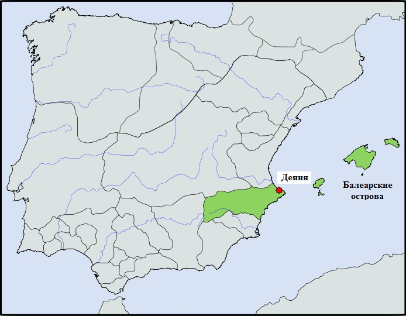

История отношений между Генуей и Пизой знала периоды тесного военного сотрудничества и периоды ожесточенных войн.
В период арабских набегов на итальянские территории до Первого крестового похода, в начале XI века, Генуя и Пиза выступали, как правило, совместно против общего врага. Когда в 1015 году правитель мусульманского эмирата (тайфы) Дения (включавшего в свой состав одноименный город в Испании с прилегающими территориями и Балеарские острова) Муджахид аль-Амири атаковал Сардинию с целью ее захвата, Генуя и Пиза объединили усилия. У них не было другого выхода. Торговля с восточным Средиземноморьем была для них блокирована Венецией, Амальфи и Неаполем, которые, опираясь на союз с Византией, не настроены были пускать соперников в свою вотчину. Захват же западного Средиземноморья андалусскими мусульманами грозил Генуе и Пизе полной изоляцией от основных источников сырья и рынков сбыта.
Муджахид аль-Амири, славянин по матери, основал тайфу Дения в 1011 году и превратил флот в эффективное орудие расширения своего влияния в регионе.

Тайфа Дения
Возможно, поддержку в экспансии ему оказывал пиратский флот братьев-славян; по крайней мере славяне засветились при захвате Балеарских островов.
В 1015 году флот Муджахида в составе 120 судов высадил на Сардинию войско арабов, в числе которых было до одной тысячи всадников. Как сообщает пизанская хроника (или, если угодно, эпическая поэма) того времени, Liber maiolichinus de gestis Pisanorum illustribus (Книга Майоркская о деяниях знаменитых пизанцев), Муджахид захватил практически все прибрежные долины Сардинии («от гор до моря» - Omnia cum plano tenuit montana tyrampnus (Liber maiolichinus , III, 74)). Это позволяет сделать вывод, что в планах мусульманского военачальника (а это был опытный командир, недаром вторым именем его было Абу-ль-Джейш – «Отец армии») был не краткосрочный набег с целью грабежа острова, а намерение захватить Сардинию полностью. Об этом также свидетельствует тот факт, что передовой отряд флота Муджахида высадился на побережье Италии близ города Луни, примерно на равном расстоянии от Генуи и Пизы, излюбленном плацдарме завоевателей начиная с эпохи Рима.
Совместными усилиями Генуи и Пизы удалось обратить Муджахида в бегство, хотя это потребовало мобилизации всех сил. Для нас, как любителей истории галер, любопытно будет отметить, что духовный подъем населения был настолько велик, что за весла галер сели даже пизанские аристократы. Вот что написано по этому поводу в Книге Майоркской:
Tunc non erubuit quisquam de nobilitate
Viribus equoreas remos urguere per undas
В то время любой благородный нобиль не стыдился
Мощь морскую веслами продвигать по волнам.
(Liber maiolichinus, III, 77–78)
Итог кампании 1015 года лаконично, но емко подвел хронист Bernardo Maragone в Annales Pisani:
"Fecerunt Pisani et Ianuenses bellum cum Mugieto in Sardineam, et gratia Dei vicerunt ilium.
Пизанцы и генуэзцы вступили в войну с Муджахидом и, с божьей помощью, разбили его.
В следующем, 1016 году, Генуя и Пиза вновь вынуждены были объединить свои военные усилия против захватчиков из Дении. На этот раз опасность была даже больше. За истекший год Муджахид провел реформы в своем государстве, создав устойчивую военно-экономическую систему под контролем государства. Армия получила в свое распоряжение знаменитых балеарских лошадей и вьючных мулов. Мобилизовав практически все корабли восточного побережья Андалусии, Муджахид сформировал из них мощный флот, на который были погружены обученные десантные силы сухопутных войск. Чтобы Византия не вмешивалась в дела захватчиков, в первые же часы операции по высадке десанта на Сардинию был убит византийский правитель Салусио. Местное население было фактически обращено в рабство. Силами сардов началось строительство фортификационных укреплений на острове. Непокорных сжигали на кострах. Эти события вызвали озабоченность не только правителей прибрежных итальянских городов, но и папы Бенедикта VIII, который объявил привилегии для всех участников похода против захвативших Сардинию мусульман и направил в войска свое «багряное знамя». К сожалению, споры за право владеть Сардинией между Генуей и Пизой, вспыхнувшие в дальнейшем, привели к тому, что из исторических хроник были удалены многие записи, связанные с совместной борьбой генуэзцев и пизанцев против Муджахида, так что у нас на этот счет очень скудный материал. Известно, что в борьбе на море, как это часто бывает, решающую роль сыграл погодный фактор. Согласно арабским источникам, Муджахид неудачно выбрал место стоянки для своего флота у берегов Сардинии и налетевший шторм бросил корабли на прибрежные скалы. Дело довершил объединенный генуэзско-пизанский флот. Пишут, что в этом бою участвовали и корабли, присланные папой, но это скорее для придания большего веса победе. Мать Муджахида и его сын-наследник были взяты в плен. Мать была возвращена «ее племени», а сына удерживали в плену несколько лет. Выжившие после катастрофы арабские моряки были переданы местным жителям, которые тут же их всех казнили.
Не успели отгреметь празднования совместной победы над врагом, как между Генуей и Пизой словно черная кошка пробежала. Пизанцы ускоренными темпами стали осваивать сардинские территории, не допуская туда генуэзцев. Даже монахов из монастыря Монте Кассино выдворили, заменив их лояльными к Пизе монахами из марсельской обители Сен-Виктор.
Постепенно вражда охватила не только сардинскую территорию, но и районы Италии. Первоначально верх одерживали пизанцы. Но эти победы не привели к стратегическому успеху. Мы знаем из дальнейшей истории, что взаимное ослабление итальянских союзников в конце концов привело к постепенному захвату Сардинии испанцами, а в 1325 году король Арагона Хайме II завоевал ее окончательно, вступив на престол нового Королевства Сардинии и Корсики под именем Джакомо I.
Как мы отметили, Генуя первоначально уступала Пизе. Ее название реже появляется в истории морских событий того времени, в основном во вспомогательных операциях, обеспечивающих действия Пизы. Эта сравнительная слабость Генуи неоднократно провоцировала пизанцев к наступлению на генуэзские интересы. В 1066 году эти действия переросли в открытые военные столкновения, которые продолжались с короткими перерывами почти двадцать лет. Имеются записи в хрониках Бернардо Марагоне (Annales Pisani) и Рафаэлло Рончиони (Delle istorie pisane: libri XVI) за 1066 и 1070 гг. о кровавых схватках и поражении генуэзцев, потерявших в результате этих сражений семь галер. Генуэзцы, естественно, изображались в этих хрониках коварными агрессорами. Но нам вряд ли стоит всерьез принимать эти записи: очень уж пристрастны были указанные авторы.
Также скудны и изобразительные свидетельства морских сражений той эпохи. О кораблях XI-XII веков мы писали раньше (см. например здесь), и добавить к этому практически нечего. Разве что привести свидетельство из «Книги майоркской» относительно типов кораблей, которые входили в состав пизанского флота, атаковавшего Балеарские острова в 1115 году:
Gatti, drumones, garabi, celeresque galee, barce, currabii, lintres, grandesque sagene, et plures alie variantes nomina naves.
Liber Maiolichinus de gestis Pisanorun (Rome 1904), p.105
О них мы поговорим в следующих постах.